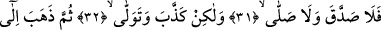
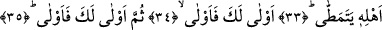
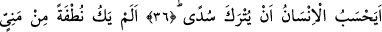
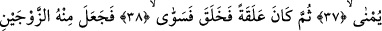
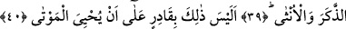
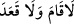
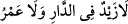

İNSAN, KENDİSİNİN BAŞIBOŞ
BIRAKILACAĞINI MI SANIR!
31. İşte o, (Peygamber’in getirdiğini) doğru kabul etmemiş, namaz da kılmamıştı.
32. Aksine yalan saymış ve yüz çevirmişti.
33. Sonra da çalım sata sata yürüyerek kendi ehline (taraftarlarına) gitmişti.
34. Lâyıktır (o azap) sana, lâyık!
35. Evet, lâyıktır sana (o azap) lâyık!
36. İnsan, kendisinin başıboş bırakılacağını mı sanır!
37. O, (döl yatağına) akıtılan meninin içinden bir nutfe (sperm) değil miydi?
38. Sonra bu, alaka (aşılanmış yumurta) olmuş, derken Allah onu (insan
biçiminde) yaratıp şekillendirmişti.
39. Ondan da iki eşi, yâni erkek ve dişiyi var etmişti.
40. Peki (bunları yapan) Allah’ın, ölüleri tekrar diriltmeye gücü yetmez mi?
31) “İşte o” insan, Peygamber Efendimiz’in peygamberliği ve ona inen Kur’an gibi tasdik
etmesi gerekeni “(Peygamber’in getirdiğini) doğru kabul etmemiş” tasdik etmemiştir.
Âyette yer alan “lâ” burada “lem” mânâsınadır. Mâzi sîgası üzerine yapılacak tekrar
güç katmak için getirilmiştir. Bunu şu şekilde ifâde etmemiz de mümkündür: “lâ”nın fiil-
i mâzî üzerine gelip tekrar etmesi güzel bir ifâde, anlatım biçimidir. Söz gelimi araplar
“__WORD__/ne kalktı ne oturdu” derler. Arapçada “lâ” harfinin tek başına kullanıldığı
yerler nâdirdir. Çoğunlukla bir “lâ”yı bir ikinci “lâ” izler. Söz gelimi Araplar şöyle
derler: “__WORD__/Evde ne zeyd var ne de amr.”
Üzerinde durduğumuz bu âyet-i kerîmeyi: “O insan malının zekâtını vermedi” şeklinde
tefsir etmek de mümkündür. Ancak âyeti bu şekilde tefsir edecek olursak neden
namazdan önce zekâta yer verildiğini açıklamamız gerekir. Çünkü Kur’an’ın âdet ve
metodu dâimâ namaza zekâttan öncelik verildiği şeklindedir. Biz buna şöyle bir
açıklama getirebiliriz: Mekke kâfirleri şiddetli ve güçlü bir zarûret anında miskinlere